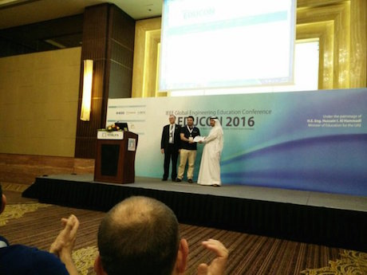
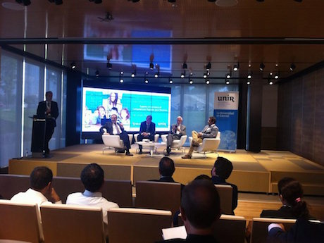
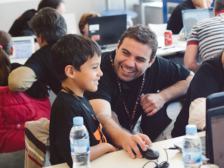
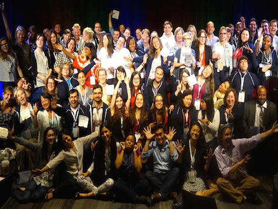
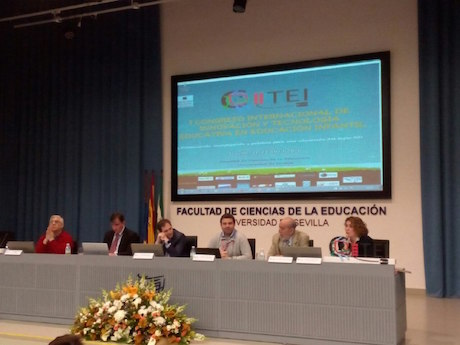
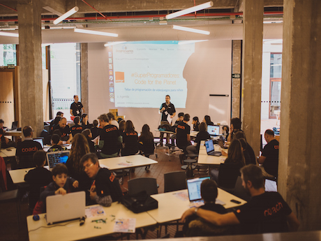
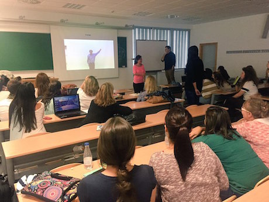

Jesús Moreno León
Personal website

EDUCON
Best paper award at IEEE EDUCON 2016, Abu Dhabi

Microsoft
Debate on coding in schools, Microsoft Ibérica, Madrid

EU CodeWeek 15
Programming with families at Univesidad Politécnica de Madrid

Google RISE Awards
Google Rise Summit 2015, Boston MA

CITEI
International Congress on Technologies for Early Education 2016, Seville

Code for the Planet
CodeWeek 16 event with Orange, MediaLab Prado

Scratch Day
Scratch Day 15, Science House, Seville

Universidad de Sevilla
Training to-be teachers at the School of Education
After more than a decade as a Computer Science teacher,
I am focused on research and promotion of Computational Thinking (CT):
- I work at the National Institute for Educational Technologies and Teacher Training (Ministry of Education),
where I lead a working group studying how to include CT in the national curriculum, and where we host CodeEducaLAB; - work on my PhD thesis on CT at Universidad Rey Juan Carlos, where we develop Dr. Scratch;
- and collaborate with Programamos (We Code), a non-profit organization which supports educators in bringing CT to schools.
Publications on Computational Thinking
| [1] | Jesús Moreno-León, Gregorio Robles, and Marcos Román-González. Towards data-driven learning paths to develop computational thinking with Scratch. IEEE Transactions on Emerging Topics in Computing, PP(99):1--1, 2017. [ bib | DOI ] |
| [2] | Jesús Moreno-León, Marcos Román-González, Casper Harteveld, and Gregorio Robles. On the automatic assessment of computational thinking skills: A comparison with human experts. In Proceedings of the 2017 CHI Conference Extended Abstracts on Human Factors in Computing Systems, CHI EA '17, pages 2788--2795, New York, NY, USA, 2017. ACM. [ bib | DOI ] |
| [3] | Marcos Román-González, Jesús Moreno-León, and Gregorio Robles. Complementary tools for computational thinking assessment. In CTE 2017: International Conference on Computational Thinking Education 2017, pages 154--159, July 2017. [ bib ] |
| [4] | Efthimia Aivaloglou, Felienne Hermans, Jesús Moreno-León, and Gregorio Robles. A dataset of scratch programs: scraped, shaped and scored. In Proceedings of the 14th International Conference on Mining Software Repositories, pages 511--514. IEEE Press, 2017. [ bib ] |
| [5] | Gregorio Robles, Jesús Moreno-León, Efthimia Aivaloglou, and Felienne Hermans. Software clones in scratch projects: On the presence of copy-and-paste in computational thinking learning. In Software Clones (IWSC), 2017 IEEE 11th International Workshop on, pages 1--7. IEEE, 2017. [ bib ] |
| [6] | Jesús Moreno-León, Gregorio Robles, and Marcos Román-González. Examining the relationship between socialization and improved software development skills in the Scratch code learning environment. J. UCS, 22(12):1533--1557, 2016. [ bib ] |
| [7] | Jesús Moreno-León, Gregorio Robles, and Marcos Román-González. Code to learn: Where does it belong in the k-12 curriculum? Journal of Information Technology Education: Research, 15:283--303, 2016. [ bib ] |
| [8] | Marcos Román-González, Juan-Carlos Pérez-González, Jesús Moreno-León, and Gregorio Robles. Does computational thinking correlate with personality?: the non-cognitive side of computational thinking. In Proceedings of the Fourth International Conference on Technological Ecosystems for Enhancing Multiculturality, pages 51--58. ACM, 2016. [ bib ] |
| [9] | Jesús Moreno-León and Gregorio Robles. Code to learn with scratch? A systematic literature review. In Global Engineering Education Conference (EDUCON), 2016 IEEE, pages 150--156. IEEE, 2016. [ bib ] |
| [10] | Jesús Moreno-León, Gregorio Robles, and Marcos Román-González. Comparing computational thinking development assessment scores with software complexity metrics. In 2016 IEEE Global Engineering Education Conference (EDUCON), pages 1040--1045, April 2016. [ bib | DOI ] |
| [11] | Jesús Moreno-León, Gregorio Robles, and Marcos Román-González. How social are Scratch learners? A comprehensive analysis of the Scratch platform for social interactions. In FLOSS Education and Computational Thinking Workshop. 12th International Conference on Open Source Systems, pages 19--26, 2016. [ bib ] |
| [12] | Jesús Moreno-León, Gregorio Robles, and Marcos Román-González. Dr. scratch: Automatic analysis of scratch projects to assess and foster computational thinking. RED. Revista de Educación a Distancia, (46):1--23, 2015. [ bib ] |
| [13] | Jesús Moreno-León and Gregorio Robles. Dr. scratch: A web tool to automatically evaluate scratch projects. In Proceedings of the workshop in primary and secondary computing education, pages 132--133. ACM, 2015. [ bib ] |
| [14] | Luis Alberto Calao, Jesús Moreno-León, Heidy Ester Correa, and Gregorio Robles. Developing mathematical thinking with Scratch: An experiment with 6th grade students. In Design for Teaching and Learning in a Networked World, pages 17--27. Springer, 2015. [ bib ] |
| [15] | Jesús Moreno-León and Gregorio Robles. Computer programming as an educational tool in the English classroom: A preliminary study. In Global Engineering Education Conference (EDUCON), 2015 IEEE, pages 961--966. IEEE, 2015. [ bib ] |
| [16] | Jesús Moreno-León and Gregorio Robles. The Europe code week (CodeEU) initiative: Shaping the skills of future engineers. In 2015 IEEE Global Engineering Education Conference (EDUCON), pages 561--566. IEEE, 2015. [ bib ] |
| [17] | Jesús Moreno and Gregorio Robles. Automatic detection of bad programming habits in Scratch: A preliminary study. In 2014 IEEE Frontiers in Education Conference (FIE) Proceedings, pages 1--4, Oct 2014. [ bib | DOI ] |
Other publications and talks
- El repositorio de proyectos Scratch: nuevas oportunidades de investigación y su impacto en la educación. eMadrid Seminar on Computational Thinking. 2017.
- Computational thinking across the curriculum. eSkills course webinar. European Schoolnet Academy, 2016.
- Participación de ATI en la red de especial interés “Computing at Schools”. Revista Novática. Especial 40º aniversario: "Año 2025: El futuro de la Informática". p 7. 2015.
- La programación informática y el desarrollo del pensamiento computacional en la educación. VII Jornadas iTIC, Comunidad de Madrid. 2015.
- Innovación Ciudadana: Inteligencia colectiva para el empoderamiento glocal. Capítulo "Innovación para el empodaramiento ciudadano: Programamos". 2015.
- Dr. Scratch: análisis de proyectos Scratch para medir el desarrollo del pensamiento computacional. eMadrid Seminar on Computational Thinking. 2015.
- Spanish translation of "Creative Computing. Karen Brennan, Christan Balch, Michelle Chung, Harvard Graduate School of Education". 2015.
- El proyecto programamos: educando para el futuro. II National Congress of Computer Science Teachers (Spain). 2014.
- Pentesting con Foca. Chema Alonso. 0xWord. 2013. (Collaborator).
- An e-learning Role Playing Game: Trials using LMS (Moodle) and Micro-Blogging (Twitter). G. Robles, J. González Barahona, J. Moreno. I Jornadas en Innovación y TIC Educativas. 2010.
- FAVS, una herramienta para la creación y gestión de planetas de blogs docentes. J. Moreno, G. Robles, J. González Barahona. Conferencia sobre Software Libre en Educación Superior. 2008.
On the news
InEvery Crea
Google RISE awards
EU Code Week
En Red
Ideas al sur
Historias de luz
El Confidencial

La Vanguardia

El País

El Diario

Público

El Confidencial

EuropaPress